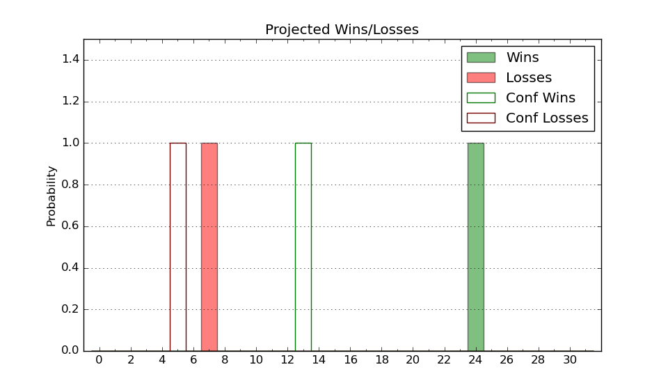

| Home | Game Probabilities | Conferences | Preseason Predictions | Odds Charts | NCAA Tournament |
| City: | Laramie, Wyoming | |
| Conference: | Mountain West (4th)
| |
| Record: | 13-5 (Conf) 24-7 (Overall) | |
| Ratings: | Comp.: 14.0 (55th) Net: 14.0 (55th) Off: 109.3 (56th) Def: 95.3 (67th) SoR: 83.1 (28th) |
| Remaining | ||||||
|---|---|---|---|---|---|---|
| Date | Opponent | Win Prob | Pred. | |||
| 3/11 | (N) Boise St. (33) | 42.7% | L 64-66 | |||
| Previous | Game Score | |||||
| Date | Opponent | Win Prob | Result | Off | Def | Net |
| 11/10 | Detroit (231) | 92.6% | W 85-47 | 10.4 | 20.4 | 30.8 |
| 11/14 | Arkansas Pine Bluff (351) | 98.5% | W 85-45 | -3.6 | 21.5 | 17.8 |
| 11/18 | @Washington (122) | 58.2% | W 77-72 | -8.1 | 13.9 | 5.9 |
| 11/22 | @Grand Canyon (90) | 44.9% | W 68-61 | 7.7 | 7.4 | 15.1 |
| 11/29 | @Cal St. Fullerton (150) | 65.3% | W 79-66 | 9.8 | -3.2 | 6.7 |
| 12/2 | Denver (289) | 95.7% | W 77-64 | 0.6 | -11.2 | -10.6 |
| 12/4 | McNeese St. (309) | 96.6% | W 79-58 | -5.2 | 1.1 | -4.1 |
| 12/8 | @Arizona (3) | 10.1% | L 65-94 | -4.9 | -12.5 | -17.5 |
| 12/11 | Utah Valley (109) | 80.0% | W 74-62 | 26.9 | -18.2 | 8.7 |
| 12/22 | (N) Stanford (106) | 67.6% | L 63-66 | -9.9 | -3.6 | -13.5 |
| 12/23 | (N) Northern Iowa (98) | 64.7% | W 71-69 | -16.9 | 9.2 | -7.7 |
| 12/25 | (N) South Florida (258) | 90.0% | W 77-57 | 9.5 | -4.8 | 4.7 |
| 1/15 | @Utah St. (51) | 33.3% | W 71-69 | 7.3 | 4.9 | 12.2 |
| 1/17 | @Nevada (118) | 56.6% | W 77-67 | -2.9 | 12.7 | 9.8 |
| 1/19 | San Jose St. (281) | 95.4% | W 84-69 | 13.1 | -17.4 | -4.3 |
| 1/22 | New Mexico (162) | 87.2% | W 93-91 | 13.5 | -21.4 | -7.9 |
| 1/25 | @Boise St. (33) | 28.7% | L 62-65 | 4.8 | 0.5 | 5.3 |
| 1/28 | @Air Force (248) | 81.7% | W 63-61 | -9.3 | -10.9 | -20.2 |
| 1/31 | Colorado St. (31) | 56.4% | W 84-78 | 0.3 | 3.9 | 4.2 |
| 2/3 | Boise St. (33) | 57.9% | W 72-65 | 11.2 | -2.4 | 8.8 |
| 2/6 | @Fresno St. (71) | 39.3% | W 61-59 | 3.5 | 4.1 | 7.7 |
| 2/8 | Utah St. (51) | 62.9% | W 78-76 | 5.2 | -2.4 | 2.9 |
| 2/12 | @San Jose St. (281) | 85.9% | W 74-52 | 0.3 | 12.4 | 12.7 |
| 2/15 | @New Mexico (162) | 66.7% | L 66-75 | -16.2 | -8.7 | -25.0 |
| 2/19 | Air Force (248) | 93.8% | W 75-67 | 6.0 | -21.6 | -15.6 |
| 2/23 | @Colorado St. (31) | 27.6% | L 55-61 | -14.0 | 11.3 | -2.7 |
| 2/26 | Nevada (118) | 81.6% | W 74-61 | -6.1 | 10.1 | 4.0 |
| 2/28 | San Diego St. (37) | 58.6% | L 66-73 | 6.5 | -17.7 | -11.2 |
| 3/2 | @UNLV (96) | 48.5% | L 57-64 | -19.9 | 8.6 | -11.4 |
| 3/5 | Fresno St. (71) | 68.8% | W 68-64 | 3.3 | -2.4 | 0.8 |
| 3/10 | (N) UNLV (96) | 63.5% | W 59-56 | -15.2 | 17.0 | 1.8 |
| Stats & Trends | |||||
|---|---|---|---|---|---|
| Current | Day | Week | Month | Season | |
| Composite | 14.0 | +0.2 | -0.3 | -2.3 | +13.6 |
| Comp Rank | 55 | +3 | +1 | -13 | +143 |
| Net Efficiency | 14.0 | +0.2 | -0.3 | -2.9 | -- |
| Net Rank | 55 | +3 | +1 | -19 | -- |
| Off Efficiency | 109.3 | -0.4 | -2.3 | -5.1 | -- |
| Off Rank | 56 | -7 | -14 | -32 | -- |
| Def Efficiency | 95.3 | +0.6 | +1.9 | +2.1 | -- |
| Def Rank | 67 | +12 | +9 | +24 | -- |
| SoS Rank | 94 | +3 | +9 | -2 | -- |
| Exp. Wins | 24.0 | +1.0 | +1.3 | +0.2 | +11.0 |
| Exp. Conf Wins | 13.0 | -- | +0.3 | -0.8 | +5.1 |
| Conf Champ Prob | 0.0 | -- | -- | -41.8 | -0.9 |

| Advanced Stats | ||
|---|---|---|
| Stat | Value | Rank |
| Off Eff FG % | 0.539 | 50 |
| Off Ast Ratio | 0.132 | 247 |
| Off ORB% | 0.241 | 234 |
| Off TO Rate | 0.143 | 75 |
| Off FT Ratio | 0.399 | 13 |
| Def Eff FG % | 0.452 | 31 |
| Def Ast Ratio | 0.110 | 12 |
| Def ORB% | 0.227 | 57 |
| Def TO Rate | 0.131 | 326 |
| Def FT Ratio | 0.227 | 20 |